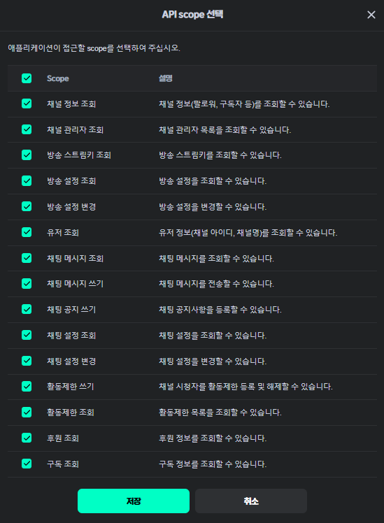

※ 치지직(CHZZK) · 네이버 · 스팀의 공식 프로그램이 아닌, 개인이 만든 비공식 도구입니다.
2. GUI 소개
켜면 방송 중 가장 먼저 보는 채팅 · 후원 목록 · 미션이 바로 나와요. 나머지는 맨 위 메뉴에서 열어요.
 메인 화면 (그림의 값은 예시)
메인 화면 (그림의 값은 예시)
| 위치 | 내용 |
|---|
| 맨 위 딱지 | 방송 중(빨강) · 시청자 수 · 로그인됨(초록) · 지금 하는 게임 / 아래 줄: 방송 제목 · 카테고리 |
| [새로고침] [자동] | 방송 상태 · 게임 다시 확인 (F5) / [자동]: 30초마다 |
| 왼쪽 | 실시간 채팅 (닉네임 클릭 → 시청자 제한 메뉴) · 유튜브 채팅 |
| 오른쪽 위 | 후원 목록 |
| 오른쪽 아래 | 미션 · 타이머 |
| 맨 아래 줄 | 마지막 로그 한 줄 |
| 메뉴 | 들어 있는 것 |
|---|
| 방송 | 방송 관리(제목 · 카테고리 · 공지) · 지금 게임으로 카테고리 맞추기 · 로그인 / 로그아웃 |
| 보기 | 방송 상태(치지직 · 스팀) · 게임 짝 · 로그 |
| 설정 | 키 · ID · 서버 주소 · 색상 (라이트 / 다크 / 치지직 그린, 색 하나씩 바꾸기) |
3. 등록 방법
처음 한 번만 하면 돼요. 치지직은 내 앱을 직접 등록해서 Client ID · Secret 을 받아야 해요.
① 치지직 개발자 센터에서 앱 등록
developers.chzzk.naver.com → 네이버 로그인 → 애플리케이션 등록
| 애플리케이션 이름 | 아무 이름 (예: 내방송도우미)
⚠ chzzk · 치지직 · naver · 네이버 를 넣으면 등록이 안 되거나 정지돼요 |
| 로그인 리디렉션 URL | http://localhost:8080/callback 한 글자도 다르면 로그인 안 됨 |
| API Scope (권한) | [API scope 선택] 에서 아래 표대로 체크 → [저장] |
| 체크 ✔ | 안 해도 됨 |
|---|
채널 정보 조회
방송 설정 조회 · 변경
채팅 메시지 조회 · 쓰기
채팅 공지 쓰기
활동제한 쓰기 · 조회
후원 조회
(없으면 후원이 0건) |
유저 조회
채널 관리자 조회
채팅 설정 조회 · 변경
구독 조회
방송 스트림키 조회 ✘
안 쓰니 체크하지 않기 |

개발자 센터 [API scope 선택]
등록이 끝나면 앱 화면에 Client ID 와 Client Secret 이 나와요. Secret 은 비밀번호예요 — 남에게 보여주거나 방송 화면에 띄우지 마세요.
② 프로그램에 키 넣기
프로그램 맨 위 [설정] → 키 · ID · 서버 주소 → 입력 → [저장]
| 칸 | 넣을 것 |
|---|
| 필수 Client ID · Secret | ①에서 받은 값 |
| 필수 채널 ID | 내 방송국 주소 chzzk.naver.com/ 뒤 32자리 |
| 선택 스팀 API 키 · SteamID64 | 스팀 게임 감지용 — steamcommunity.com/dev/apikey (도메인: localhost), 프로필 · 게임 세부 정보 공개 |
| 선택 유튜브 API 키 · 방송 주소 | 유튜브 채팅용 — Google Cloud → YouTube Data API v3 → API 키 |

③ 치지직 로그인
맨 위 [치지직 로그인] → 브라우저에서 동의 → "치지직 계정 연동 완료!" 가 나오면 끝
✔ 맨 위 딱지가 로그인됨(초록)으로 바뀌고, 채팅 위에 ● 연결됨 — 다음부터는 run.bat 만 켜면 자동 로그인 (30일 넘게 안 쓰면 다시)
권한을 나중에 바꿨다면 [방송] → 로그아웃 → 다시 로그인해야 적용돼요.